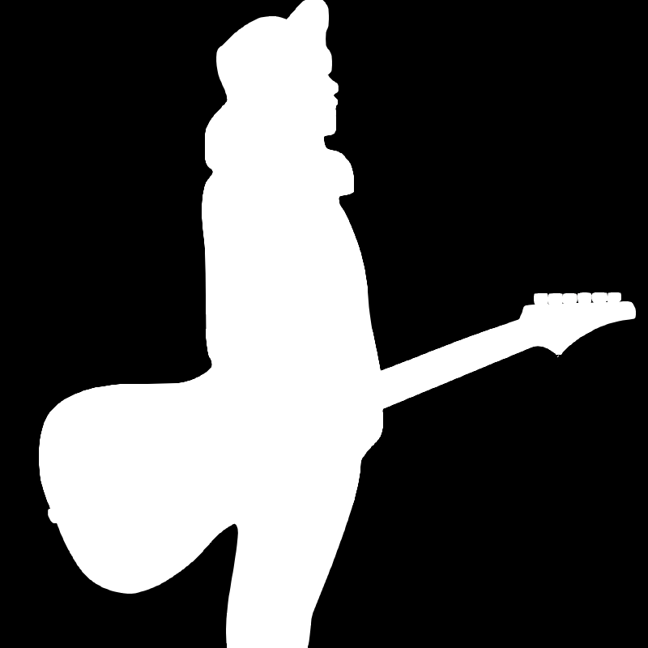

PROFILE
Name:くれない a.k.a. K Ishikura
食をこよなく愛するギタリスト兼コンポーザー。
主にインターネット上で活動しており、ロックでエモーショナルな演奏、作編曲を得意とする。
●2009年、12歳の時に兄の影響でギターを始める。
●2012年、動画投稿サイトに「くれない」名義で演奏動画公開。
●2016年、様々なギターコンテストに参加し、数々の賞を頂く。
●2017年、VOCALOID楽曲を動画投稿サイトに公開開始。
●2018年、「WhileTrue:」を結成、4月に1stアルバムを発売。